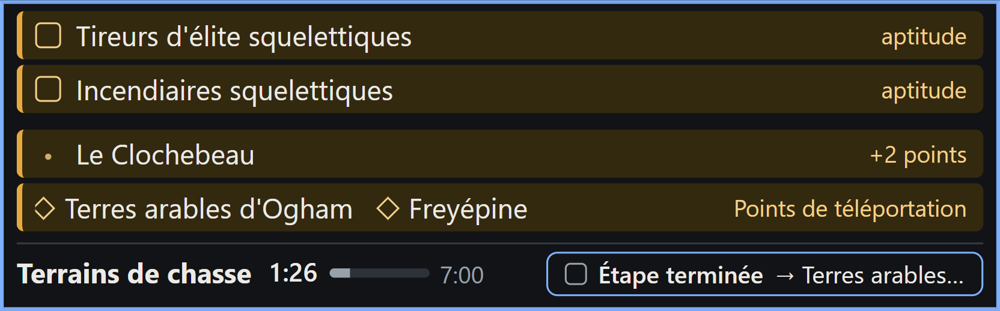
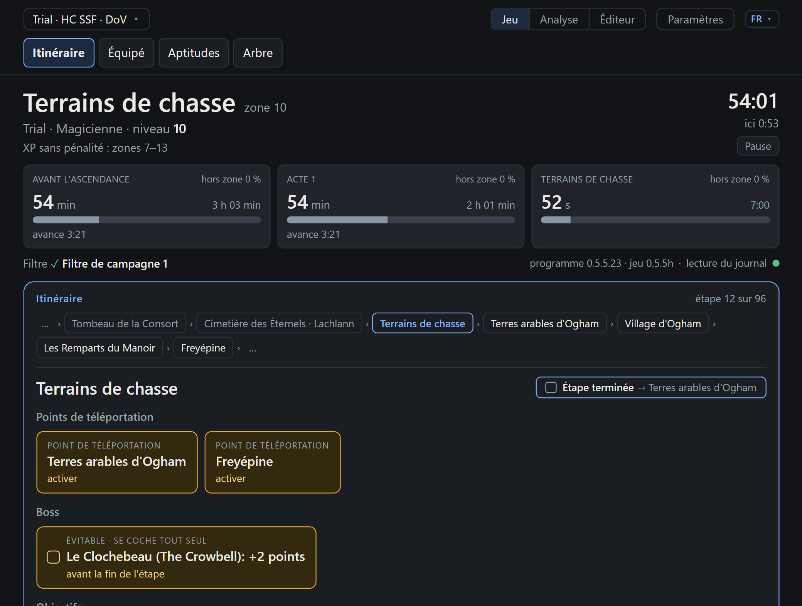
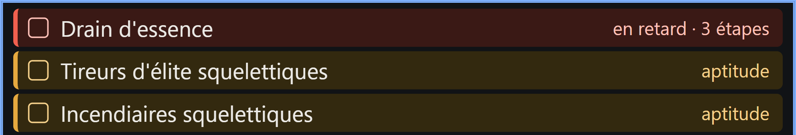
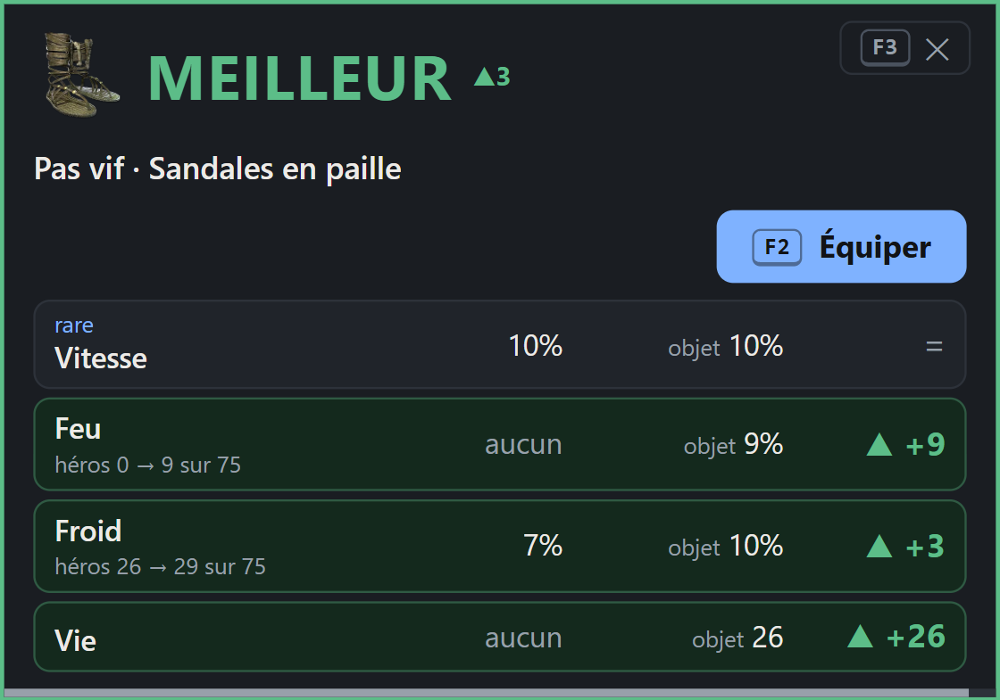
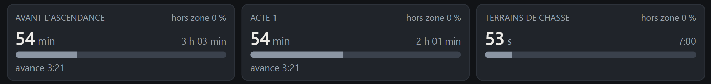
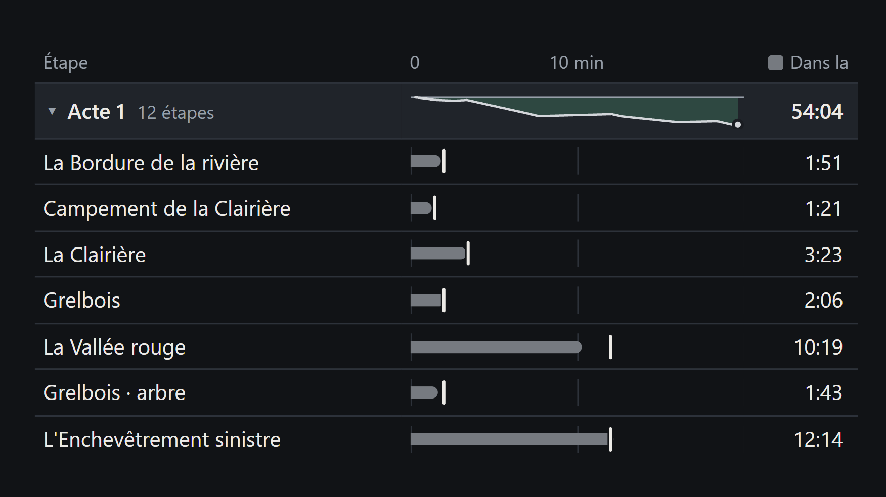
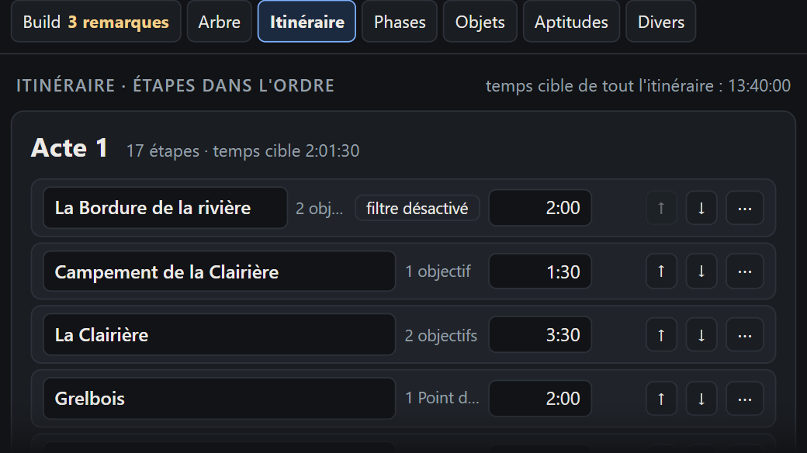

Jouez comme un pro
L’auteur du plan a déjà passé pour vous des centaines d’heures d’essais et d’erreurs. Runbook vous guide selon ce plan : où aller, qui tuer, quoi prendre dans chaque zone.
Télécharger pour WindowsPour les auteurs de builds
La première version n’est pas encore publiée

Vous jouez, c’est tout
Vous entrez dans une zone : Runbook affiche déjà ce qu’il faut y faire. Le niveau, les récompenses et les nœuds de l’arbre, il les coche tout seul.

La ligne rouge ne s’en ira pas
L’auteur du plan sait ce qui doit être pris et équipé, et pour quelle étape. En retard ? La ligne passe au rouge et reste là tant que vous ne l’avez pas fait.

Équiper ou jeter
F2 sur un objet, et vous voyez s’il est meilleur ou pire que celui que vous portez. D’après les stats choisies par l’auteur du plan.

Au rythme de l’auteur
Chaque étape, chaque acte a son temps, fixé par le plan. Vous voyez où vous êtes en avance et où vous êtes en retard.

Analyse
Chaque minute compte
Après la partie, la page « Analyse » montre où est passé le temps : par étape, dans la zone, en ville et hors itinéraire. Comparez avec votre héros précédent, et vous verrez où vous avez été plus rapide.


Vous savez faire mieux ?
Composez votre propre plan. La campagne est déjà balisée : chaque zone, chaque boss, chaque récompense. Ajoutez votre build et vos échéances.
PoE2 Runbook
Questions
J’ai déjà un guide. À quoi me servirait Runbook ?
Un guide, il faut le lire, le retenir et le comparer avec le jeu. Runbook, lui, avance avec vous : il sait dans quelle zone vous êtes et vous montre quoi faire maintenant.
Il n’y a pas de plan pour ma classe. Que faire ?
Les plans arrivent dans le catalogue quand leurs auteurs les partagent. En attendant, vous pouvez composer le vôtre : la campagne est déjà balisée, il ne reste qu’à ajouter votre build.
Un patch est sorti. Runbook fonctionnera-t-il ?
Après un patch, il faut une nouvelle version de Runbook. Tant qu’elle n’est pas sortie, le programme vous prévient que le jeu est plus récent. Dès qu’elle sort, la mise à jour se fait avec un seul bouton.
La liste n’apparaît pas par-dessus le jeu
Cela arrive quand le jeu tourne en plein écran : il recouvre les fenêtres de Runbook. Dans les options du jeu, choisissez le mode plein écran fenêtré, et la liste apparaîtra. Si elle n’apparaît toujours pas, vérifiez dans Runbook, sous « Paramètres », que l’option « Fenêtres par-dessus le jeu » est activée.
Windows m’empêche de lancer l’installateur
L’installateur n’est pas encore signé, et Windows ne connaît pas son éditeur. Cliquez sur « Informations complémentaires », puis sur « Exécuter quand même ». Comment vérifier le fichier avant de le lancer
Il me manque une fonctionnalité. Puis-je la demander ?
Oui. C’est la première version, le programme va évoluer, et toutes les demandes sont les bienvenues : écrivez ce qui vous manque ou ce qui ne fonctionne pas comme il faut. Écrire à l’auteur · Tickets sur GitHub